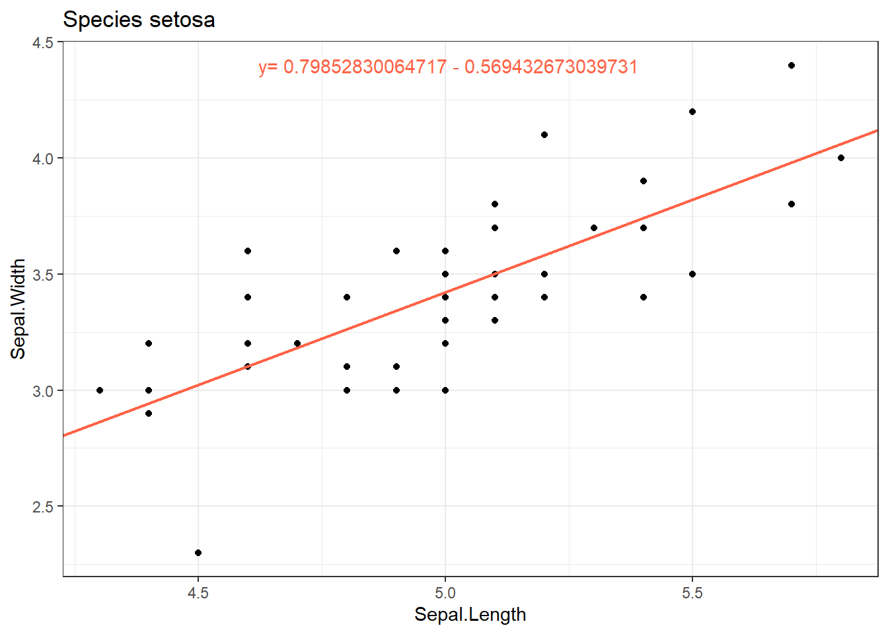
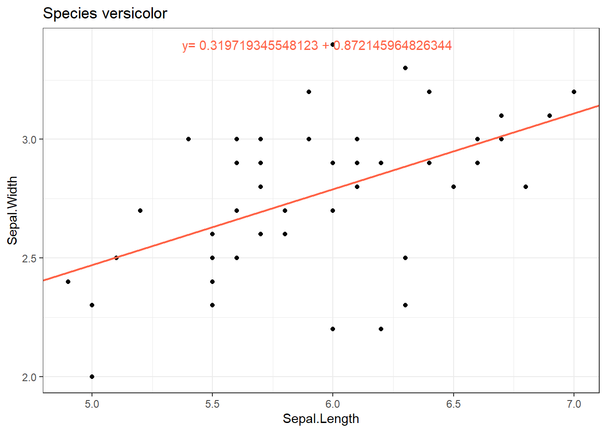
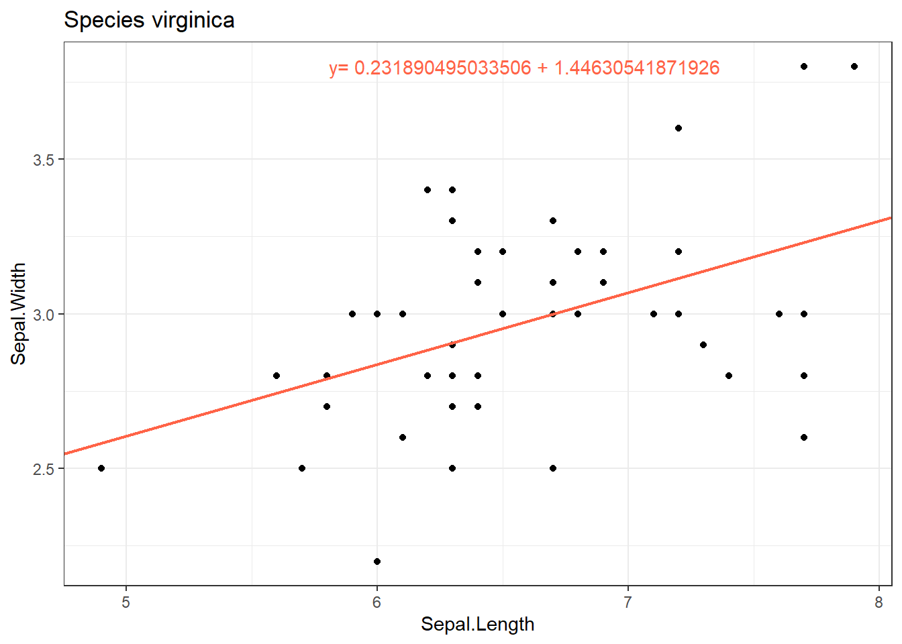
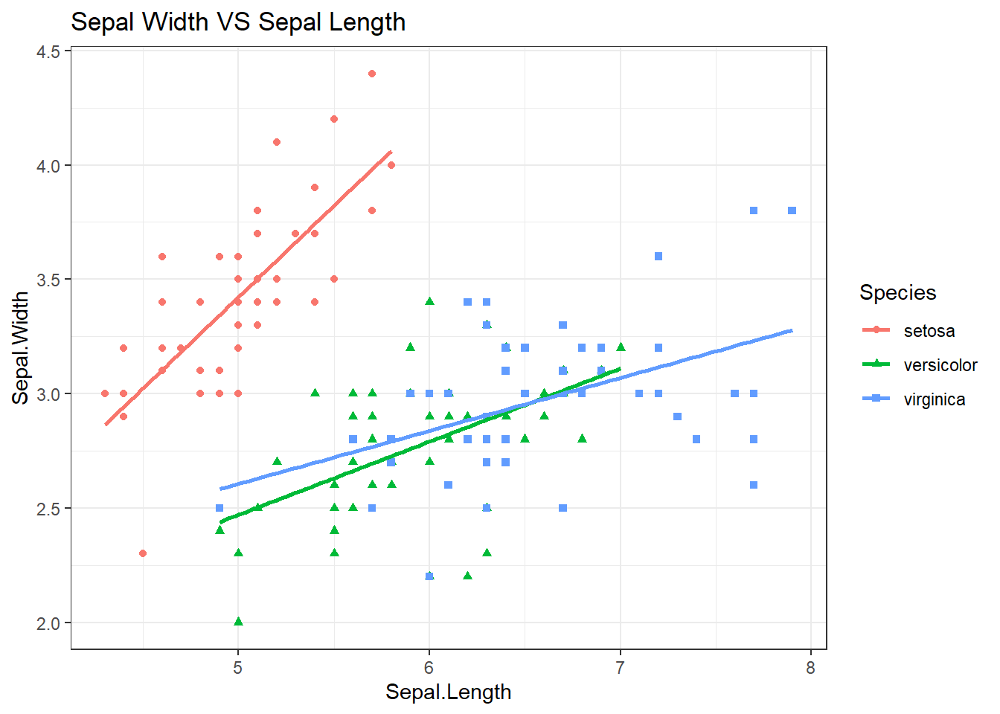

x<-runif(1,-10,10)
if(x>0){
print(paste("La valeur",round(x,1),"est positive",sep=" "))
}TD6 : Programmer sur R
1 Instructions conditionnelles :
if(condition){instruction} permet de calculer des instructions uniquement lorsque la condition est vraie.
Regarder l’aide des fonctions runif() et paste() pour comprendre ce qu’elles retournent.
if(condition){instruction1}else{instruction2} permet de calculer l’instruction1 lorsque la condition est vraie et l’instruction2 lorsque la condition est fausse.
x<-runif(1,-10,10)
if(x>0){
print(paste("La valeur",round(x,1),"est positive",sep=" "))
}else{
print(paste("La valeur",round(x,1),"est négative",sep=" "))
}On peut imbriquer plusieurs conditions if en écrivant else if.
Rappel :
l’opérateur | correspond à OU : A | B est faux lorsque les deux événements A et B sont faux simultanément.
l’opérateur & correspond à ET : A & B est vrai uniquement lorsque les deux événements A et B sont vrais.
Exercice :
- Choisir deux nombres x et y au hasard dans l’intervalle \([0,10]\).
- La valeur stockée dans la variable z sera égale à \(x+1\) si \(x<y\) sinon égale à \(x+2\) si \(x>5\) et \(y>5\) sinon égale à \(x\).
- Retourner les valeurs de x,y,z. On pourra utiliser la fonction
paste().
Voir la correction
x<-runif(1,0,10)
y<-runif(1,0,10)
if(x<y){
z<-x+1
}else if(x>5 & y>5){
z<-x+2
}else{
z<-x
}
print(paste("x=",x,"y=",y,"z=",z))2 Boucle FOR, WHILE :
2.1 Boucle FOR
for (var in seq) {commandes} permet de définir un nombre d’itérations dans une séquence.
Par exemple on veut stocker dans la variable x la somme des entiers de 1 à \(n\) où \(n\) est fixé par l’utilisateur :
n <- 100
x <- 0
for(i in 1:n){
x <- x+i
}
print(x)Mais on peut aussi faire la somme de tous les entiers impairs compris entre 1 et n
n<-100
x<-0
impairs<-seq(1,n,2)
for(i in impairs){
x<-x+i
}
print(x)Exercice : On considère deux variables \(x\) et \(y\) initialisées à 0. On propose le jeu suivant : “à chaque itération on tire un nombre au hasard entre 0 et 1, lorsque ce nombre est supérieur à 0.5 on incrémente la valeur précédente de \(y\) de 1, sinon c’est la valeur précédente de \(x\) qui est incrémentée de 1.”
Le joueur gagne si au bout de \(n\) itérations \(y>x\). Ecrire le programme pour \(n=10.\)
Voir la correction
n<-10
y=x=0
for(i in 1:n){
a<-runif(1,0,1)
if(a>0.5){
y<-y+1
}else{
x<-x+1
}
}
if(y>x){
print("Gagnant")
}else{
print("Perdant")
}2.2 Boucle WHILE
while(condition){instruction} répète une instruction tant que la condition considérée est vraie. Attention, la condition est évaluée avant toute exécution dans while.
i <- 1
while (i<10){
print(i)
i <- i+1
}Exercice
- Créer un vecteur nommé vecAlea de 100 valeurs entières entre 1 et 100. On utilisera la fonction
sample()avec remise.
Voir la correction
vecAlea <- sample(1:100,100,T)- déterminer le vecteur IND qui contient les indices des valeurs strictement supérieures à 50, (avec une boucle et sans une boucle)
Voir la correction
IND <- c()
for(i in 1:100){
if(vecAlea[i]>50){
IND <- c(IND,i)
}
}
IND <- which(vecAlea>50)- déterminer le vecteur VEC contenant ces valeurs.
Voir la correction
VEC <- vecAlea[IND]- On calcule le maximum du vecteur vecAlea. Déterminer à l’aide d’une boucle le nombre de fois où ce maximum apparaît dans vecAlea. Retrouver ce nombre sans utiliser de boucle.
Voir la correction
M <- max(vecAlea)
n <- 0
for(i in 1:length(vecAlea)){
if(vecAlea[i]==M){
n <- n+1
}
}
length(which(vecAlea==M))- Créer le vecteur nommé vecPM5 contenant tous les nombres de 1 à 100 qui ne sont pas des multiples de 5 (avec une boucle puis sans). Penser à la fonction
floor()qui calcule la partie entière.
Voir la correction
VecPM5 <- c()
for(i in 1:100){
if(i/5-floor(i/5)!=0){
VecPM5 <- c(VecPM5,i)
}
}3 Ecrire une fonction en R :
- On veut écrire une fonction qui, étant donnée le rayon \(r\) d’un cercle permet de calculer son périmètre \(P=2\pi r\), on note cette fonction
perim()
perim<-function(r){
return(2*pi*r)
}
perim(1)[1] 6.283185On remarque que dans le langage R il n’est pas nécessaire de donner le type des arguments (entier, carcatère,…), la fonction s’appliquera sauf si le type n’est pas correct.
perim("rayon")On peut améliorer cette fonction en indiquant à l’utilisateur que la fonction ne sera calculée que lorsque \(r>0\) :
perim<-function(r){
if(r>0){
return(2*pi*r)
}else{
return("On ne calcule le périmètre que lorsque r>0")
}
}
perim(1)[1] 6.283185perim(-1)[1] "On ne calcule le périmètre que lorsque r>0"Ici, l’erreur reste identique si on applique la fonction périmètre à "rayon"…
On peut également définir des fonctions qui ont plusieurs arguments en entrée et qui peuvent retourner plusieurs valeurs en sortie.
- Autre Exemple : on va écrire une fonction
rectangle()ayant pour arguments \(L\) et \(l\) qui renvoie sous forme de liste le périmètre \(P=2\times(L+l)\) et l’aire \(A=L\times l\) du rectangle.
rectangle<-function(L,l){
P <- 2*(L+l)
A <- L*l
return(list(Perim=P,Aire=A))
}
rectangle(11,10)
## Que le périmètre :
rectangle(11,10)$PerimExercice :
Créér une fonction SomEnt() ayant pour argument un nombre entier n et qui retourne la somme des entiers inférieurs ou égaux à n.
Voir la correction
SomEnt<-function(n){
x <- 0
for(i in 1:n){
x<-x+i
}
return(x)
}4 Exercices
4.1 Exercice 1 (Droite des moindres carrés)
On va écrire une fonction R qui permet de déterminer l’équation de la droite des moindres carrées ordinaires. Vous verrez (ultérieurment en statistiques) que pour un nuage de points \((x_i,y_i)_{i=1,...,n}\) la droite la plus proche (au sens des moindres carées) de ce nuage a pour pente \(a=\dfrac{\frac{1}{n}\sum_{i=1}^n{x_i y_i}-\overline{x} \overline{y}}{\frac{1}{n}\sum_{i=1}^n x_i^2-\overline{x}^2}\) et pour ordonnée à l’origine \(b=\overline{y}-a\overline{x}.\)
Créer une fonction nommée droite() ayant pour arguments deux vecteurs x,y et qui calcule le coefficient directeur de la droite et son ordonnée à l’origine.
4.2 Exercice 2 : Boucles et graphiques
Reprendre la base de données iris :
data("iris")
levels(iris$Species)Utiliser une boucle de manière à faire une boîte à moustaches par variable quantitative
colnames(iris)[1:4]selon l’espècecolnames(iris)[5].Utiliser une boucle de reproduire les graphiques suivants (on pensera à utiliser les fonctions
droite()etgeom_abline()pour ajouter la droite des moindres carrés, et la fonctionannotate()pour ajouter un text spécifique).



- Réaliser le graphique suivant qui réunit les trois précédents sur un même graphique (on utilisera la fonction
geom_smooth()avecmethod=“lm”).
